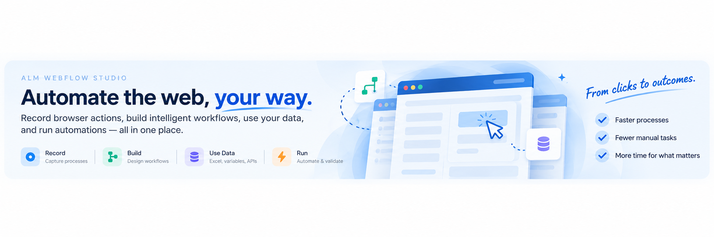

| Name | Description | Status | Last Run | Success Rate | Owner |
|---|
| Flow | Status | Started | Duration | Steps | Run ID |
|---|
Quick Stats
Live dataRecent Activity
New Flow
Choose how you want to start your automation.
Recording Setup
Live Recorder
Start with the browser process itself. A recording becomes a new Draft WebFlow when you stop, so you do not need to create a flow first.
The browser remains local. Captured screenshots and step metadata are synchronized back to Studio for preview and authoring.
Flow Designer
Build conditions, loops, variables, reusable subflows and governed Python around recorded browser steps.
Flow Steps
0 stepsReusable Subflows
Object Repository
Phase 3 — captured page objects are persisted independently from executable steps with ranked locator strategies and stability diagnostics.
Captured Objects
0 objects| Object | Type | Primary Locator | Stability | Seen |
|---|---|---|---|---|
| Record a process to populate the repository. | ||||
Selected Object
—Data & Variables
Map Excel/CSV columns to recorded inputs, outputs, assertions and secrets, then execute one automation run per row.
Dataset Preview
No dataset selected.| No data |
|---|
| Upload an .xlsx or .csv file to begin. |
Column Mapping
Inputs flow into the browser. Outputs flow back to the result workbook.Data-Driven Execution
Each selected workbook row becomes one isolated WebFlow run. Secret variables are injected at runtime and are never written to run JSON.| Row | Status | Run ID | Outputs | Error |
|---|---|---|---|---|
| No batch started. | ||||
Replay / Training Studio
Turn a real recording into guided, step-by-step training.
Run / Execution Console
Execute a saved recording in real Chromium with retries, assertions, outputs, checkpoints, and fresh run screenshots.
Run Configuration
Checking…Live Execution
Select a saved recording and run it.Step Evidence
{}Recent Executions
| Started | Status | Steps | Duration | Mode | Error |
|---|
Worker Pool
Provider-neutral queue contract; local workers remain the standalone provider and are cloud-hostable in Phase 11.Schedule Automation
Schedules enqueue the same WebFlow run contract used locally and later on BTP.Execution Queue
Queued → assigned → running → completed/failed. Running jobs may be cancelled without stopping the scheduler.| Created | Flow | Source | Status | Worker | Run | Duration | Action |
|---|---|---|---|---|---|---|---|
| Queue is empty. | |||||||
Schedules
Disable a schedule without deleting its definition. One-time schedules disable themselves after enqueue.| Name | Flow | Cadence | Next Run | Last Enqueued | Status | Actions |
|---|---|---|---|---|---|---|
| No schedules yet. | ||||||
Performance Studio
Run repeatable synthetic browser transactions using the same WebFlow execution engine, selectors, Designer logic, screenshots, and assertions.
Current Test
Select a recorded flow and start a synthetic test.Transaction Duration
Warm-ups are excluded from the measured statistics.Browser Diagnostics
Console errors and failed / HTTP error requests. Payloads and response bodies are not collected.Step Timing Breakdown
Average and P95 timing by WebFlow step across measured runs.| # | Step | Action | Samples | Average | Median | P95 | Min | Max | Failures |
|---|---|---|---|---|---|---|---|---|---|
| No measured steps yet. | |||||||||
Recent Performance Tests
| Started | Status | Flow | Runs | Concurrency | Average | P95 | Success |
|---|---|---|---|---|---|---|---|
| No performance history yet. | |||||||
Script / Developer Studio
Generate a readable Playwright Python project, edit it externally, re-upload it, and track whether the flow remains visually synchronized.
Generated automation.py
Select a flow to preview the generated project.# Select a flow to generate its Python automation package.
Round-Trip Status
Settings / Runtime
One WebFlow runtime for standalone development and SAP BTP / ALM Engineering Hub deployment.
Runtime Profile
Loading…BTP / Hub Readiness
Checking…Hub Registration
webflow-hub-plugin/1Governance Controls
Phase 14 runtime policy — saved inconfig/governance.json.Pilot Readiness
Hardening gates for standalone and BTP pilot use.Audit Trail
Redacted, append-only, hash-chained mutation events.Worker Resource Controls
local-thread-poolExternal AI Providers
Provider-neutral adapters; credentials stay in Cloud Run environment variables / Secret Manager.config/ai-providers.json. Actual keys/tokens are never stored there. See docs/AI_PROVIDER_ADAPTER_GUIDE.md when adding a provider.WebFlow Local Client
Install once on your workstation to record and run browser automations inside the company network.Advanced / manual pairing
Hybrid Security Boundary
Outbound onlyInteractive recording and browser execution belong on an approved Local Client inside the user's existing network context. BTP hosts orchestration, metadata, preview, governance, scheduling, distribution, audit and results. WebFlow does not provide VPN, proxy, port-forwarding, arbitrary URL tunneling, or firewall-bypass capabilities.